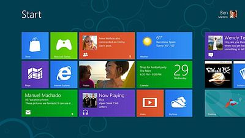

Windows 8 Consumer Preview & VS11 beta
Sancho / 07.03.2012, 04:21/00:41
Форум:
Недавно компания Microsoft выложила Windows 8 Consumer Preview, а также Visual Studio 11 beta, для свободного скачивания. Кто ни будь скачивал, ставил, смотрел? :)

Я скачивал Developer Preview. Мне понравился обновленный "Мой компьютер", а вот меню "Пуск", мне больше теперешнее нравится. Немного неудачно они его в 8-ке сделали. Это мое мнение. Пока других "вкусностей" для повседневной работы, особо не заметил. Хотя в ин-те на роликах показывают еще дополнительные возможности, которых, я не обнаружил :(
Consumer Preview отличается от Developer Preview :)
Качал, установил, столкнулся с траблой белого(пустого) экрана, просто курсор на фоне белоснежной заливки монитора. Эта проблема выявлена у небольшого числа пользователей, пока нет решения, подожду официального выхода и заплатки.
Ну я ставил в VirtualBox, там ни каких проблем не возникло. Попробуй, удобно :)